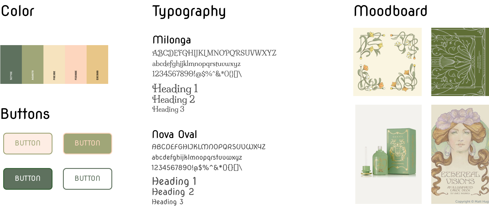
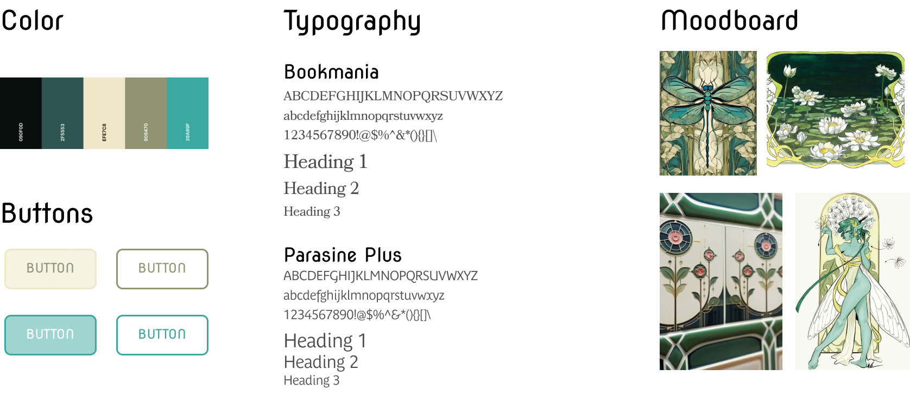
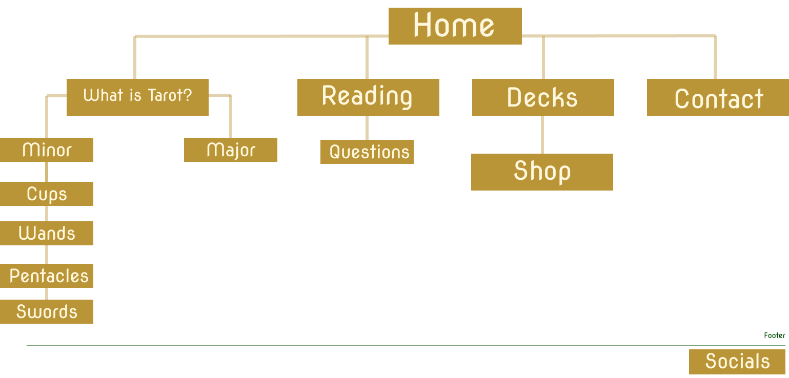

Tarot 101
Dive into Divinity
A Website Design for Tarot 101

About the Project
Goal
The goal was to create a five page website design. My website was 'Tarot 101' where anyone can learn the basics of tarot reading. As someone who reads tarot for myself and others, I thought a introduction website would be benficial to the community and any one who wants to learn.
Research and Sketching
Soft and whimsical. I wanted my design to feel inviting but also magical! There is nothing scary about learning deck of cards, so I wanted the colors and images to illustrate that. This was also a time I experimented with AI. By prompting Adobe Firely and using my own illustrations, I was able to generate my card/background images.
Scope
Project Type: Web Design
Software: Figma, Adobe Firefly
Style Tiles + Sitemap
Style Tile A
Style Tile B
Site Map
Wireframes
Coding
Let's Learn Together
Although I had my wireframes ready, plus a second version, I ultimately combined both to create the final design. I felt that both iterations lacked variation between the five pages. With lots of tinkering and brain scraping, the final result is a reflection of who I am! Click below to view my protoype or view it on this page (it's clickable and scroll-able!)